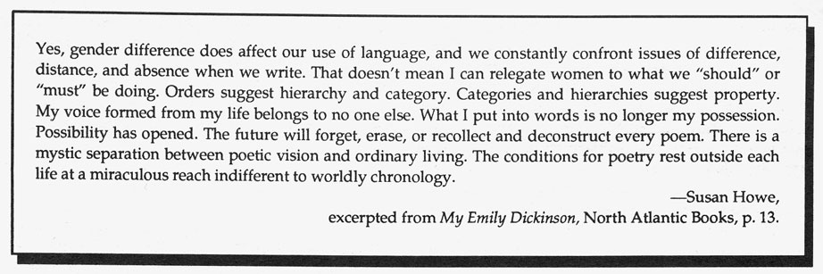
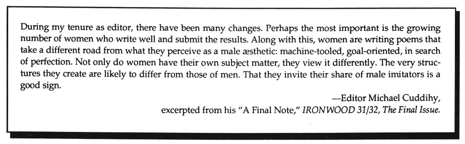

Editor's Notes
HOW(ever), at the end of its fifth volume, now holds in some palpable way the second half of an equation first proposed quite tentatively in May, 1983, when we guessed our way up and out of isolation and the shared frustration of editorial powerlessness. From there we claimed sixteen pages every four months--a modest proposal with which to assert our choices of the new writing being practiced by women poets unaffiliated with particular aesthetic or political ideologies yet making a poetry which, by its very art and necessity, re-examined and re-invented our sense of language, further locating varieties of female experience previewed in the works of modernist women innovators preceding us: Woolf, Richardson, Sitwell, Stein, Loy, H.D., Riding, Butts, Barnes, Niedecker, Moore.
We've often been asked for our editorial credo, but have resisted hardening into a certain "aesthetic position," deciding instead to remain curious. Our points-of-focus have been taken by surprise and often determined by concerns emerging from work that arrived in the mail. Lyric Proposals was first suggested by the anti-ghazals of Phyllis Webb, a Canadian poet whose work we read and admired years ago (requesting reprint rights in 1983). We waited to find other lyric genetic breaks to cluster with hers. Finally the circle has come full round with this issue. While our ear has wanted difference and our habits unbalancing, there are yet sweet aires awash with off-rhymes of inevitability and crackling with ahistoric awkward sound. . . . Sound implicating undeciphered plots, spiritual dilemmas, yawing away from an idea of beauty based on predictability and the predetermined.
•
After announcing in our previous issue (Vol. V, No. 3) the probable end of HOW(ever) with this issue, many letters arrived begging urgent reconsideration. Two phone calls were received within the week, unknown to each other, with concrete offers of editorial energy from Myung Mi Kim (see poems in H(er), Vol. IV, No. 3), and from Meredith Stricker (see poems in H(er), Vol. V, No. 1, and her H.D. piece in this issue). We are delighted to announce that Meredith Stricker and Myung Mi Kim will assume guest co-editorship of HOW(ever) Vol. VI, Nos. 1-4 from January, 1990 through January 1991. Myung co-edited the magazine Pavement in 1986 and has published poems in Ironwood, Sulfur, Calyx, f.(lip). She teaches and directs the Student Special Services at Luther College in Decorah, Iowa, and immigrated to the U.S. from Korea at age nine. Meredith has collaborated on dance/language/visual performances with Elizabeth Lahey in New York City, and mixes a career of teaching, translating and editing in and around the University of Iowa, Iowa City. Her poems and critical writing have appeared in Pavement, Poet & Critic, Ink, Epoch, Iowa Architect, Berkeley Poetry Review. Both women completed the M.F.A. in poetry at the University of Iowa Writer's Workshop. Manuscripts for Vol. VI may be submitted to them, after October 30th, at:
HOW(ever) c/o Stricker & Kim, 1171 East Jefferson, Iowa City, Iowa, 52240. Subscription checks for Vol. VI should also be sent to their address.
•
We want to thank members of the writing/reading community who have lent us particular support--emotional and financial--for our undertaking: Catherine Stimpson, Sam Francis, Donna Haraway, Burton Hatlen, Susan Stanford Friedman, Ron Silliman, Marjorie Perloff, Hank Lazer, Barbara Guest, James Clifford, Marianne DeKoven, Wendy Mulford, Art Bierman and Mark Linenthal. Our typesetter, George Mattingly, has been invaluable in his understanding of the difficult lineation and spatial considerations undertaken in much of the new poetry on these pages, and we have been continuously grateful for his intelligent workmanship.
•
New writing publications, edited by women, are burgeoning: The Weaselsleeves Press chapbook series, edited by Janet Rodney, P.O. Box, 8187, Santa Fe, New Mexico 87504 announces forthcoming titles: The Capture Morphology, two essays by Susan Howe, and Two Talks on Stein, by Lyn Hejinian . . . BIG ALLIS, contemporary writing edited by Melanie Neilson and Jessica Grim, $10 per year, two issues: 139 Thompson Street #2, New York, NY 10003. Number 1 includes work by fourteen known and not-so-known women . . . .Cold Water Broadside, a single page of poetry or fiction distributed monthly, FREE, to anyone sending name & address, edited by Elizabeth Robinson, 412 College, Norman, Oklahoma 73069; submissions and contributions welcome . . . .MOTEL, soon to be launched from Vancouver. Inquiries to: Kathryn MacLeod, 204 West 48th, Vancouver, British Columbia, V5Y 2Y8. RESURGENT, New writing by women ("urgent words that press, dilate, disrupt, appropriate, subvert genre, language, narrative, expectation, relation. 'alive with de-familiarization. . . unappeasable.' (Cixous)"; deadline February, 1990, 307 West State Street, Ithaca, New York 14850.
•
Recently published works of note: Fair Realism (poems) by Barbara Guest, Sun & Moon Press, Los Angeles. Animal Instincts (prose, plays, essays), by Carla Harryman, This Press, Berkeley. Sonnets, Bernadette Mayer, Tender Buttons Press, New York City. Foresta Ultra Naturam, (verses and visuals of three avant-garde Italian poets) featuring sixty-five pages of Italian and English text by Giulia Nicolai, from Invisible City press, San Francisco and Los Angeles. Striking Resemblance (four investigative texts) by Tina Darragh, Burning Deck, Providence, Rhode Island. Excessive Bathing (poems) by Jennifer Hoff, e.g. books, San Francisco. Relation (poems) by Diane Ward, Roof Books. way (poems) by Leslie Scalapino, North Point Press, Berkeley. Also by Leslie Scalapino: The Return of Painting (a limited edition "novel"), DIA Foundation. Air Pocket (poems) by Kimiko Hahn, Hanging Loose Press; Scars Make Your Body More Interesting & Other Stories (21 new pieces added to re-issue of her first story collection), by Sherril Jaffe, Black Sparrow Press; The Stone Baby (novel), by Laura Chester, Black Sparrow Press.
•
Modernist/feminist scholarship: Jean Rhys and the Novel as Women's Text by Nancy R. Harrison, University of North Carolina Press, Chapel Hill. Eagerly awaited: The Language that Rises: The Voice of Gertrude Stein, 1923-1932, by Ulla E. Dydo; and The Pink Guitar, essays by Rachel Blau DuPlessis, collected from recent journal publications and due in 1990 from Routledge, London.
 --Kathleen Fraser
--Kathleen Fraser


HOW(ever), ISSN 0895-5-5743, is available in a fifth series of four numbers. For libraries interested in purchasing the complete series, beginning with Vol. I, we have a limited number of archival sets. Archival sets cost $12 per volume for individuals; $15 for institutions. Subscriptions for Vol. V cost $8 for individuals; $10 for institutions. Individual copies of HOW(ever), often asked for as "sample copies," are available at $2.50 each from Small Press Distribution, 1814 San Pablo, Berkeley, CA 94702. Subscription checks for Volume VI of HOW(ever) should be made out to: HOW(ever), c/o Stricker & Kim, 1171 East Jefferson Street, Iowa City, Iowa 52240. $10 (individuals), $12 (institutions).


go to this issue's table of contents